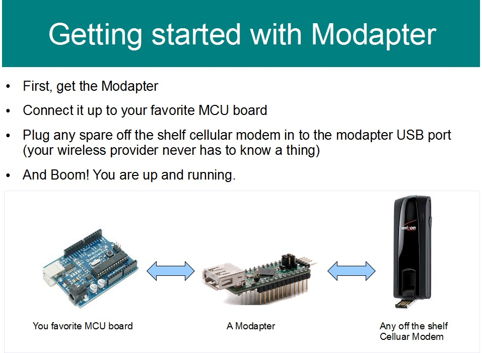
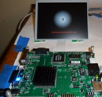
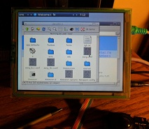
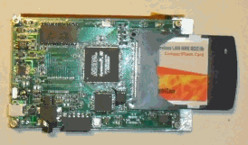
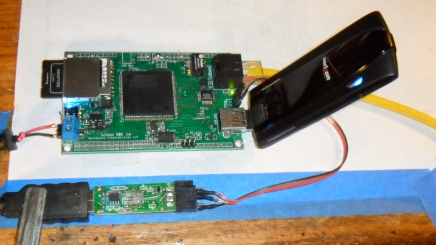
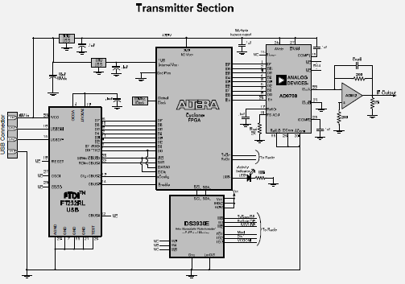
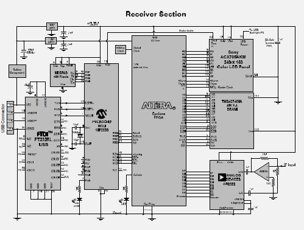
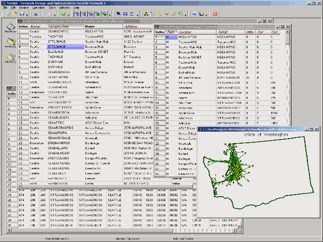

yPU the "Synthetic SoC":
The yPU is a Synthetic System on a Chip is something I have been working on for a long time, it is a complete computer on an FPGA that can be synthisized, that is to say, compiled after using a super simple, user friendly GUI to pick all the peripherals that you want on your SoC. You simply drag and drop the desired resources to your target, compile and download and you have the perfect chip for you app. You want 16 RS232 ports, 8 PWM ports, whatever combo you need can be configured specifically for your app. The CPU is the ubiquotous 80186 core, but could be adapted to any. The peripherals can be any Wishbone compatible IP cores, e.g. LCD driver, Touchscreen, Mouse, Keyboard, 100BaseT, USB Host port, Wifi, 4G wireless, audio driver, PWM, RS232 ports, GPIO lines, SPI interface, system RAM, SD card, graphics RAM, etc. (sorry no github files yet, waiting on some legalities).
The Modapter:
The Modapter is a wireless modem adapter that allows you to plug in any USB based wireless modem, 4G, 4G LTE, GSM, GPRS, CDMA and etc. and integrate that device into your MCU project even if your MCU does not have an OS or any USB drivers. The Modapter uses the same type of driver as typical Linux boards or Windows based computers use to interface with Wireless Modems but does not require the user to take on the task of installing managing a full blown Linux Operating System. Instead, with Modapter, most of the work is done for you, on the Modapter chip, so you can get your project up and on the Mobile Internet as quicly as possible without fussing with Linux or other operating systems, drivers or complexities. The Modapter sits between your MCU project and the Wireless Modem and provides a simple interface to send and receive data over the internet.
yPU the "Synthetic SoC":
The yPU is a Synthetic System on a Chip is something I have been working on for a long time, it is a complete computer on an FPGA that can be synthisized, that is to say, compiled after using a super simple, user friendly GUI to pick all the peripherals that you want on your SoC. You simply drag and drop the desired resources to your target, compile and download and you have the perfect chip for you app. You want 16 RS232 ports, 8 PWM ports, whatever combo you need can be configured specifically for your app. The CPU is the ubiquotous 80186 core, but could be adapted to any. The peripherals can be any Wishbone compatible IP cores, e.g. LCD driver, Touchscreen, Mouse, Keyboard, 100BaseT, USB Host port, Wifi, 4G wireless, audio driver, PWM, RS232 ports, GPIO lines, SPI interface, system RAM, SD card, graphics RAM, etc.

The "TabX1 Project":
TabX1 is my attempt at creating a cool Linux based tablet computer. The idea behind it is to create a functional tablet at a very low cost using a low cost low power SoC ARM chip and de-load much of the processing to an attached FPGA chip.TabX1 is running Linux 2.6.36 with Busybox Filesystem, X11 Xwindows, Fluxbox desktop and I am using Rox Filer and Netsurf browser. It has 5.7" Color LCD display with Touchscreen, Mouse, Keyboard, 100BaseT, USB Host port, Wifi, 4G wireless, custom graphics driver (implemented on FPGA along with custom audio driver on FPGA), USB device, 4 RS232 ports, 32 GPIO lines Accellerometer, RTC, 64MBytes system RAM, SD card for disk, 8MB graphics RAM, etc etc..
For more information and technical details, visit: https://github.com/donnaware/TabX1


The "zPhone Project":
The purpose of the "zPhone Project" is to create a hand held Ultra-Thin Client device operating over a wireless connection such as WiFi or 3G/4G high speed wireless. An Ultra-Thin Client (UTC) is a client implemented in hardware. A thin client has no intelligence or computing power of its own and hence, relies completely on it’s server for operation.The concept of a UTC is to implement the client completely in hardware, specifically an FPGA to reduce the cost and power consumption of the device. A hardware implementation reduces cost since no software licensing, operating system costs or programming costs are incurred for the device itself.
The power consumption is reduced since there is no need for a high speed microprocessor and associated storage, memory and other support peripherals. The end result being that battery life is greatly enhanced. The highest power consumption is incurred from the RF section. For this project, an 802.11b mini-PCMIA interface card is selected. The 802.11b has reduced power consumption over 802.11g/n because b uses a CDMA air interface which has a much lower spectral density than the OFDMA scheme used by g/n.

4G LTE Embedded Linux Developers Kit (4GELDK):
A Rapid Development and Delivery platform for 4G wireless embedded applications based on Open Source / Open Hardware embedded Linux Debian Distro running on an Industry Standard ARM9 CPU. provides simple PHP, WEB back end to ease development.


FPGA Based Software Defined Radio:
An FPGA consists of a large array of Logic Elements (LE). Each LE contains basic building block of digital logic circuits (AND, OR, Flip Flop, etc). These arrays can be in the range of 10K – 100K or more LE’s. Other types of blocks may also be on the FPGA chip such as dedicated multipliers (important for DSP applications) or RAM and sometimes embedded microprocessor (e.g. ARM). All of the blocks can be arbitrarily interconnected to each other via the re-programmable interconnection. The challenge for the designer is to determine the optimal way to interconnect these blocks to achieve the design goal. Many computer aided tools have been developed to assist in this effort.In this project, an SDR (Software Defined Radio) was simulated and synthesized using Verilog HDL and implemented in a prototype set up. The design demonstrated OFDM modulation scheme to transmit video images and further demonstrated that is software reconfigurable by altering in software to transmit NTSC video over standard broadcast. This project was used for Masters EE program project.

Apollo Guidance Computer replica:
AGC implemented using an FPGA.The AGC (Apollo Guidance Computer) was a very early computer, designed in 1964, it was the first to use Integrated Circuits and the first modern embedded processor. When I was growing up, about 11 years old, I remember the Apollo program was fascinating to me and I had my eyes glued to the TV for days on end. The Moon landing made such a lasting impression on me that it is why I decided to go to engineering school and get a degree in Electrical Engineering. I used an FPGA (Field Programmable Gate Array) that can think of that as the equivalent of thousands of the TTL chips that is endlessly and completely reconfigurable. I used the Altera Cyclone FPGA which has a lot of memory right on the FPGA. I also developed the user interface using a custom LCD controller using a CLPD and a Microcontroller with a USB interface so code can be downloaded from your PC.
https://github.com/donnaware/AGC
The Zero Board Computer:
ZBC is a PC-XT SoC (System on a Chip) that is implemented on an Altera Cyclone III FPGA. ZBC is intended to be fun and educational and able to run DOS and uCLinux. The motivation for this project was to emulate the Intel 80186 CPU using Verilog HDL and to synthesis a working computer by utilizing custom and open source ( www.opencores.org) peripheral IP Cores (Intellectual Property) to form a complete bootable SoC. The completed project also implemented complete TCP/IP,UDP,HTTP,FTP,ARP,ICMP stack in a driver called TinySOCK developed by me. http://github.com/donnaware/ZBC---The-Zero-Board-Computer
Roto-Cell 2000:
Roto-Cell is just a fun project that uses an old style Rotary Phone with the original internal electronic components removed and replaced with a small cell phone main board and a micro-controller to interface the old style dialer and ringer to the cell phone data interface. For this project I used an old cell phone that I had laying around and an old timey rotary phone that I bought at a garage sale. The cell phone I used is an LG VX3300 flip phone. But you can probably use just about any more recent models. Most cell phones have a "data Interface" that is basically an RS232 interface that uses the Modem "AT" command set to control it.

Scanning Tunneling Microscope:
Scanning Tunneling Microscopy (STM) is a process by which atoms may be imaged using tunneling theory. STM involves the tunneling of electrons through gap from the tip of the STM to the sample. This can be considered as tunneling between two metallic electrodes, separated by a vacuum region. The potential in the vacuum region acts as a barrier to electrons. In this simplified form, one can apply the solution of the Schrodinger equation, applied to a rectangular barrier: psi = exp{kx}, where k = sqrt[2m(Vb - E)/(h2)] where, Vb represents the barrier potential, E is the energy of the particular state, and h corresponds to the reduced Planck constant. In General, the tunneling current through the vacuum is proportional to the separation between the tip and the sample. An atomically sharp tip is used, the tunneling current from the first atom of the tip can be determined while the tip is scanned using piezo-electric nano-positioning probe and the measured tunneling current is numerically processed to an image.
NetOpt
Network Optimization Platform and NODAL (Network Optimization, Design & Analysis) Compiler (invented my own language). This is a software IDE platform specifically designed to explore network optimization algorithms. A specialized language was developed that allows quick implementation of various algorithms and also allows simple linking of C or C++ or other high level modules.
Complete List of Projects:
- Embedded Micro-sequencer (FPGA CPU emulation)
- ElectroSketch 2000 – portable electronic sketch device
- FPGA Prototype boards
- FPGA Based General Purpose Graphic LCD Driver
- Microcontroller Ultrasonic distance measurement device
- Video Frame Grabber
- Video Generator
- Telescope CCD
- Computer controlled HeNe Laser
- Micro-controlled Laser diode driver
- CCD Linear Scanner
- Microcontroller based Sunrise Sunset Timer (turn lights on and off )based on calculated position of the sun)
- USB Microcontroller interface
- Microcontroller VGA generator
- Microcontroller FM Radio
- Microcontroller TV Tuner
- Homebrew MP3 Player
- 78 RPM MP3 Ripper
- Pong implemented in an FPGA
- Topographic Data viewer
- Harmonograph Simulator
- LatLon to VH Converter
- Dterm – RS232 / Telnet Terminal emulator
- Mp3 Player
- Chess Engine (Chess game)
- Black hole simulator in java
- Code editor
- "Spread grid" Spreadsheet Program
- PC based Tone Generator
- PC based Oscilloscope
- ErlangB calculator
- Disk Viewer
- Global Temperature viewer
- WMAP data viewer
This list can go on and on...